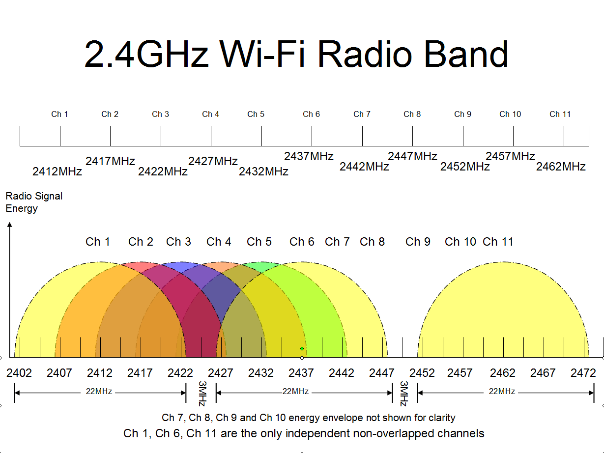

Canais 2.4Ghz que usamos:
6 ao 9
Canais 5Ghz que usamos:
36 ao 44
Os canais de frequência wi-fi afetam fortemente a conexão sem fio do cliente, fazendo-o ter pequenas quedas por conta da sobreposição de redes vizinhas no mesmo canal de sua rede. Uma breve explicação de como funciona abaixo:
Há modelos de modem que provisionam um diagnóstico de como estão as redes vizinhas do equipamento, chamado geralmente de “Neighbor AP Information”, tanto para redes 2.4ghz quanto 5ghz. Como acessar essa configuração? É bem simples, siga o passo-a-passo abaixo (em dispositivos Huawei atualizados, caso seja em outro equipamento o processo é bem parecido):
Ordem de melhor Signal Strength para pior:
→ Weak/Weaker: melhor que este, somente se não houverem redes no canal que desejas utilizar;
→ Normal: não é tão afetado, porém recomenda-se achar um canal melhor para evitar problemas;
→ Strong/Stronger: fortemente afetado, não recomendado em nenhuma situação.